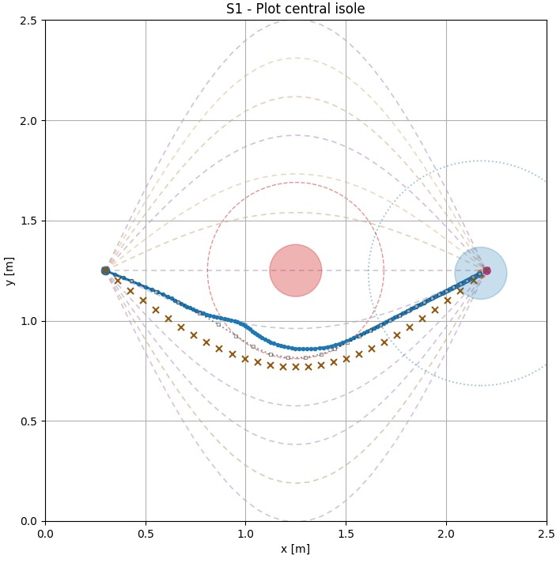
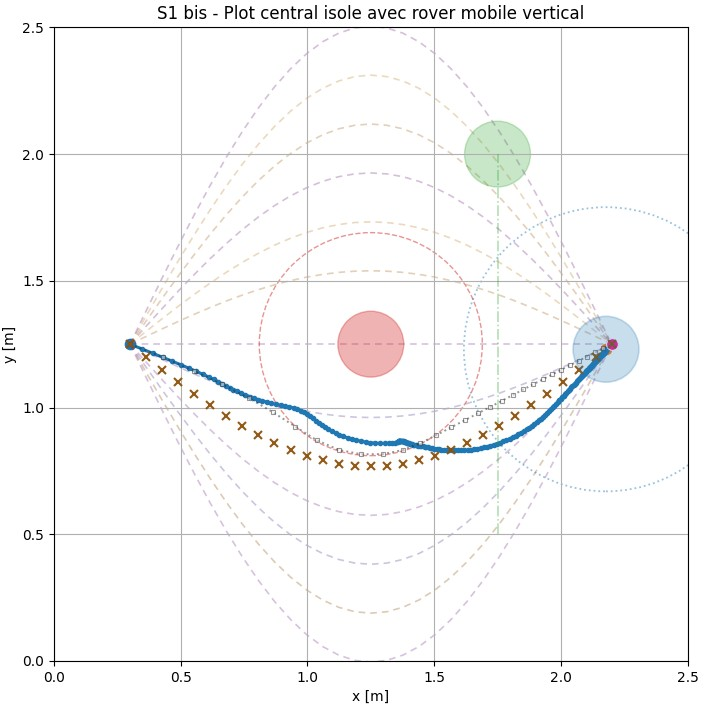
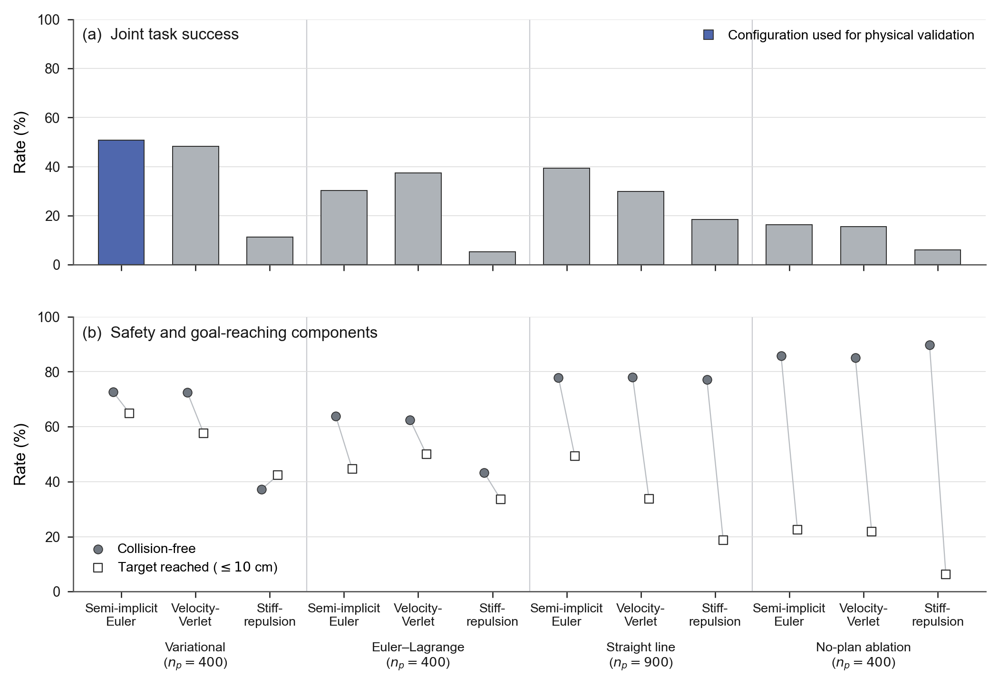
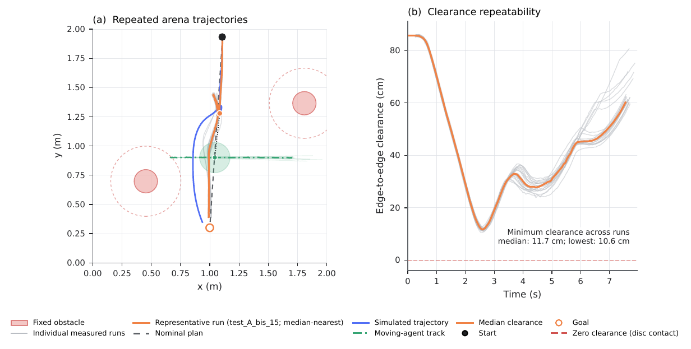
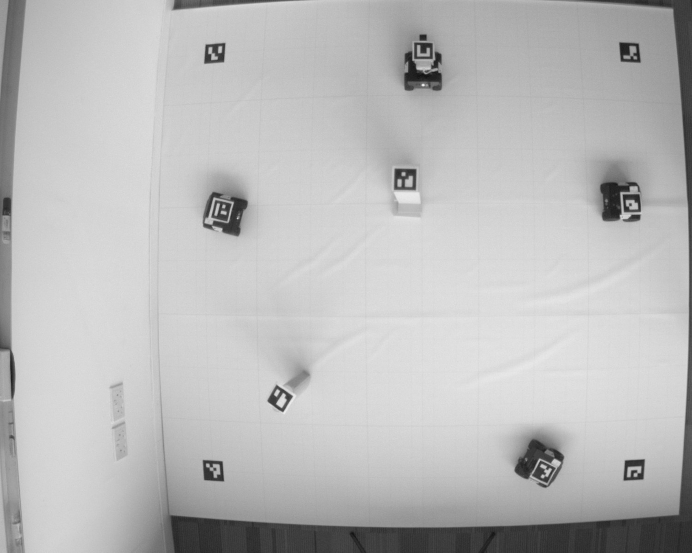
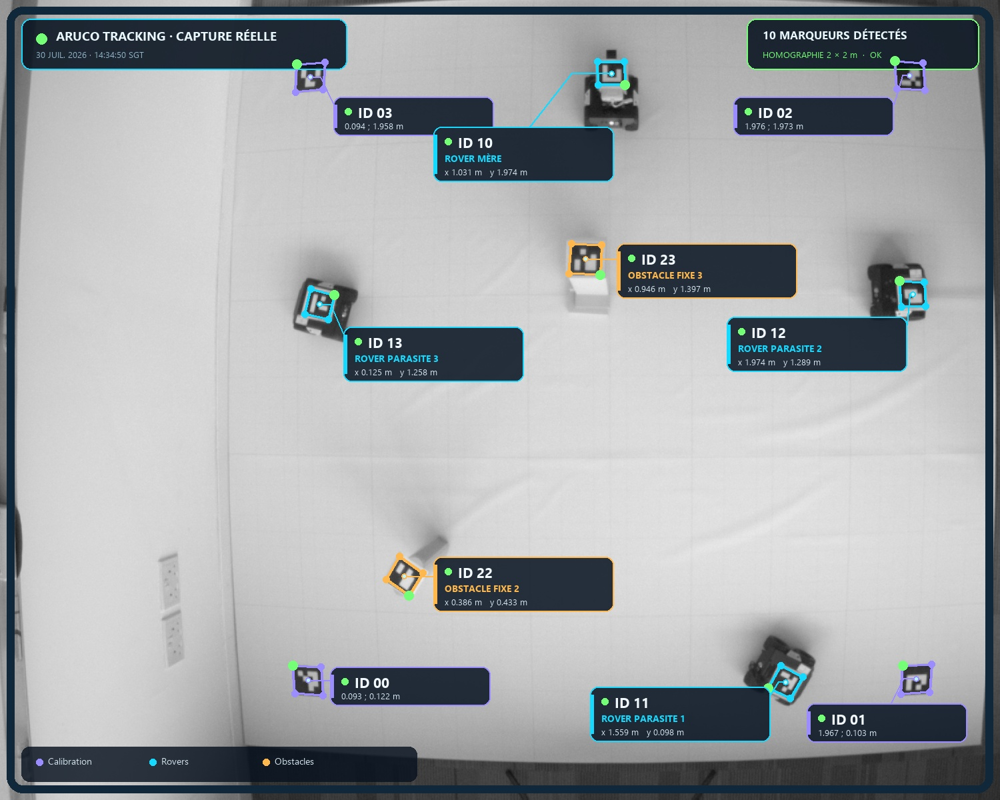
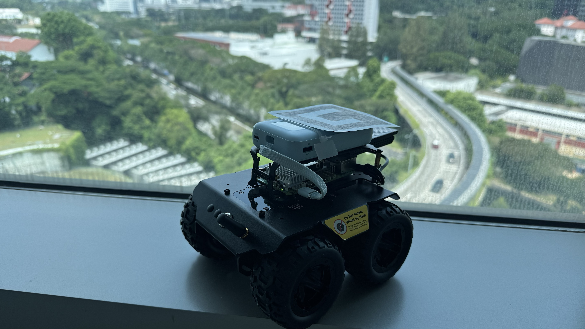
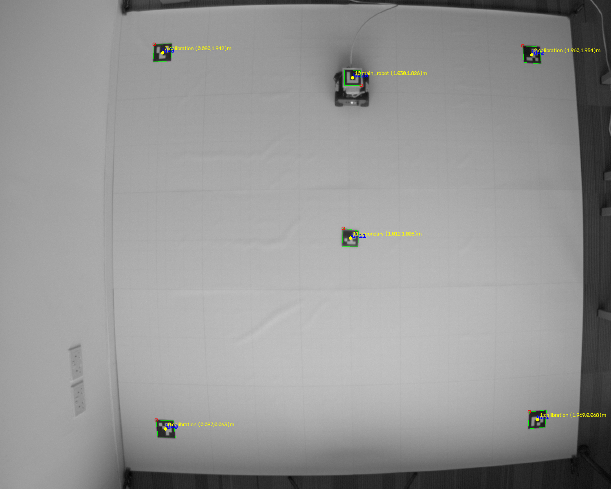

Physical runs reaching the goal
one coefficient set, no retuning between runsAutonomous systems · Research showcase
From the optimized
trajectory to
real motion.
Our system enables the robot to navigate autonomously, identify obstacles in its environment, and correct its trajectory in real time to reach its target.
Arts et Métiers
CNRS@CREATE · Singapore
Reported repeatability campaign
two frozen tasks; not a general guaranteeSmallest moving-agent clearance
edge-to-edge between conservative safety discsSustained closed loop
median rates in the one- and two-agent blocks01 The challenge
Calculating an optimal trajectory is not enough.
It must adapt in real time and work in the real world.
An autonomous system has to connect a fixed start to a fixed goal while respecting obstacles, boundaries, velocity, acceleration, and imperfect knowledge of moving agents.
The hard part is not producing a curve. It is building a chain that remains coherent from the mathematical objective to the physical experiment.
02 The method
Plan globally.
Respond locally.
The architecture separates what can be optimized in advance from what must be handled causally at runtime.
01
Variational planning · static scene
The nominal phase
Generate candidates, minimize a discretized action, and produce a smooth reference path around known fixed obstacles.

- Input Static environment and target only
- Output Time-parameterized nominal trajectory
- Tools Variational action minimization or Euler–Lagrange residuals
02
Force dynamics · current observation
The causal correction phase
Follow the nominal path while attraction, repulsion, and damping modify the current motion when a mobile agent is observed.

- Input Nominal reference and current mobile state
- Output Trajectory corrected locally at every instant
- Update Semi-implicit Euler, Velocity-Verlet, or stiff-repulsion
Technical layer Open the mathematical core
Variational action
𝒮[x] = ∫0T L(x, x, t) dt
ddt ( ∂L ∂x ) − ∂L∂x = 0
ddt ( ∂L ∂x ) − ∂L∂x = 0
Fixed endpoints turn trajectory generation into a stationarity problem over the path between them.
Compact obstacle potential
Vobs(d) = α(
1d
−
1d0
)²
for d < d0, otherwise 0
for d < d0, otherwise 0
The cost rises inside an influence radius and stays inactive farther away.
Damped force dynamics
mx
+ ξx
= Fgoal + Fobs + Fmobile
Attraction keeps the goal and nominal path relevant; repulsion and damping manage local correction.
2D planar motionfixed start and goalbounded velocitybounded accelerationcurrent-state mobile observation
03 Numerical strategies
Different solvers answer
different questions.
The comparison is an engineering tool, not a single leaderboard. Speed, convergence, trajectory quality, and robustness must be read together.
StrategyWhat it solvesBest useObserved trade-off
Variational
Discretized action minimization with analytic gradient
High-quality nominal planning
Longer campaigns for greater precision
Euler–Lagrange
Stationarity residual through root or least-squares methods
Low-complexity problems
Faster campaigns, but convergence remained scenario-sensitive
Straight line
No nominal optimization
Ablation and runtime baseline
Ease of computation for a low-quality reference
No-plan ablation
Causal correction without a nominal trajectory
Nominal-planning ablation baseline
High safety but limited progress toward the target
04 Auto-calibration campaign
Twelve pairs, calibrated
separately, at scale.
Each of the four nominal generators above pairs with three causal controllers. Every pair searches its own seven-coefficient space — never inheriting another pair's gains — then is compared under one criterion: safe and within 10 cm of the goal. A companion report covers the full protocol; this section summarizes its five figures.
Solver × controller pairs
4 nominal generators, 3 causal controllersPlanned runs
across the 12 campaignsFinal-zone runs
6,300 profiles × 16 scenariosCumulative campaign time
if run sequentiallyJoint success · safe and ≤ 10 cm from target
Variational planning leads at tight tolerance; safety alone misleads.
Across the full final region, Variational + Semi-implicit Euler leads with 50.84% joint success. Restricted to each pair's four best-ranked profiles and re-evaluated on all 26 scenarios, Variational + Velocity-Verlet reaches 65.38%, ahead of Variational + Semi-implicit Euler at 63.46% and the best Straight-line pair at 48.08%. The No-plan ablation reaches 96.15% collision-free runs with two correctors but only 3.85% joint success: it often stays safe by stopping short of the goal.
- 65.38%
- best-profile joint success · Variational + Velocity-Verlet
- 63.46%
- Variational + Semi-implicit Euler
- 48.08%
- best Straight-line combination
Choose a figure — the graph updates when clicked

Methodology Open the calibration protocol, full ranking, and limits
Coefficients are searched in three stages — a broad Latin Hypercube sweep, a refined search recentered on the best region, then a tighter final-zone search — over seven parameters: attraction and damping gains, mobile/static/border repulsion, perception radius, and lookahead time. A scenario with a collision-free rate under 15% after Broad is quarantined from scoring but kept running, and is reinstated once it clears 50% then 80%. Nine pairs use the long budget; the three Straight-line pairs use very_long, giving them more sampled profiles in the final region (900 versus 400).
| Pair | Budget | n zone | Zone: safe / target / joint | Top 4: safe / target / joint | Joint, calib. | Joint, held-out | Duration |
|---|---|---|---|---|---|---|---|
| Variational + Velocity-Verlet | long | 400 | 72.44 / 57.61 / 48.30 | 76.92 / 69.23 / 65.38 | 62.50 | 70.00 | 18h 47m |
| Variational + Semi-implicit Euler | long | 400 | 72.62 / 64.94 / 50.84 | 80.77 / 72.12 / 63.46 | 59.38 | 70.00 | 18h 28m |
| Straight line + Semi-implicit Euler | very_long | 900 | 77.89 / 49.30 / 39.38 | 88.46 / 52.88 / 48.08 | 46.88 | 50.00 | 0h 50m |
| Euler–Lagrange + Velocity-Verlet | long | 400 | 62.50 / 50.00 / 37.50 | 65.38 / 55.77 / 42.31 | 37.50 | 50.00 | 5h 53m |
| Euler–Lagrange + Semi-implicit Euler | long | 400 | 63.83 / 44.72 / 30.25 | 68.27 / 41.35 / 31.73 | 23.44 | 45.00 | 5h 33m |
| Straight line + Velocity-Verlet | very_long | 900 | 77.95 / 33.69 / 29.95 | 84.62 / 30.77 / 29.81 | 20.31 | 45.00 | 1h 25m |
| Straight line + Stiff-repulsion | very_long | 900 | 77.19 / 18.65 / 18.51 | 74.04 / 22.12 / 20.19 | 18.75 | 22.50 | 0h 53m |
| Variational + Stiff-repulsion | long | 400 | 37.23 / 42.33 / 11.30 | 49.04 / 41.35 / 18.27 | 10.94 | 30.00 | 18h 28m |
| Euler–Lagrange + Stiff-repulsion | long | 400 | 43.27 / 33.66 / 5.33 | 53.85 / 37.50 / 16.35 | 6.25 | 32.50 | 5h 30m |
| No-plan ablation + Stiff-repulsion | long | 400 | 89.69 / 6.19 / 5.97 | 90.38 / 9.62 / 9.62 | 6.25 | 15.00 | 0h 31m |
| No-plan ablation + Semi-implicit Euler | long | 400 | 85.80 / 22.58 / 16.38 | 96.15 / 7.69 / 3.85 | 6.25 | 0.00 | 0h 29m |
| No-plan ablation + Velocity-Verlet | long | 400 | 85.14 / 21.83 / 15.56 | 96.15 / 7.69 / 3.85 | 6.25 | 0.00 | 0h 45m |
These percentages are frequencies over a finite set of profiles and scenarios, not probabilities with a confidence interval — each pair is evaluated once, not repeated across independent random seeds, and the quarantine removes scenarios from a pair's score rather than penalising them, so the pairs are not selected over a common set of scenarios. The No-plan ablation's low joint success reflects a progression failure (collision-free but far from the goal), while Stiff-repulsion trades the opposite way by producing more unsafe runs. The ranking also depends on demanded precision: Variational + Velocity-Verlet leads at 10 cm but is matched by the Straight-line baseline at 100 cm.
05 Evidence
What is actually validated?
Every claim is tagged by evidence level. Simulation, software tests, measured motion, and complete physical validation are not interchangeable.
Physical · repeated tasks
Moving-agent avoidance
Demonstrated over 40 runs of two frozen tasks, with one or two independently moving agents.
Physical · repeated tasks
Fixed-obstacle avoidance
Fixed columns were avoided in the same reported campaign; the smallest measured margin was 29.7 cm.
Physical · measured
Metric perception chain
Camera, homography, ArUco tracking, coordinates, and control closed near 20 Hz — the rover was detected in every acquired frame.
Empirical · partial
Predictive digital twin
Mean path departures were 5.81 cm and 5.31 cm, but measured paths remained longer than simulated ones.
Repeated anti-collision campaign · August 4, 2026
Repeated campaign: forty runs, forty arrivals, zero collisions.
Two frozen tasks — twenty runs with one moving robot, twenty with two — executed in a single day with a single set of coefficients and no retuning between runs. The rover leaves its nominal path to open a gap, then closes back onto the goal. Every run below is a physical run, logged frame by frame.
- 40 / 40
- runs reached the goal, in both blocks
- 0
- collisions, and no negative safety clearance in any run
- 0.9 %
- run-to-run variation of the path length, one moving agent
Choose a figure — the graph updates when clicked

Multi-agent simulation · 6 independent agents
Every robot runs its own collision-avoidance brain.
This scenario runs the same causal correction algorithm independently inside all six agents at once, with no central coordinator. The physical campaign tested one controlled rover among one or two moving agents; this simulation illustrates the same local logic in a fully decentralized six-agent setting, without constituting physical validation at that scale.
- 6
- independent agents
- 15 cm
- minimum Newton-phase clearance
- 3 cm
- max final gap to target
Experimental layer Open the validation matrix and metric scope
| Capability | Evidence | Status | Scope |
|---|---|---|---|
| Nominal trajectory generation | Software tests + simulation | Validated | 2D scenarios in repository |
| Fixed-obstacle physical avoidance | 40 runs, all clearances positive | Demonstrated | Two frozen tasks; lowest margin 29.7 cm |
| Moving-agent physical avoidance | 20 runs, 4 August 2026 | Demonstrated | One moving robot, 2 × 2 m arena |
| Two simultaneous moving agents | 19 aggregate runs; all 20 reached goal | Demonstrated | Same corrector, no retuning |
| Sustained 20 Hz closed loop | Timing logged in all 40 runs | Demonstrated | Medians 19.84 / 19.86 Hz; isolated maximum 125 ms |
| Decentralized multi-agent (6 robots) | Simulation | Simulation | Not physically demonstrated |
| Predictive digital twin | 39 paired sim/real runs | Partial | Mean departures 5.81 / 5.31 cm; measured paths longer |
| Aerial drone deployment | None | Not claimed | Physical platform is a rover |
Clearance is measured edge-to-edge between the conservative bounding discs used by the controller (rover radius 0.13 m), not between the physical chassis outlines. During the reported 40-run campaign, no negative value and no physical contact were recorded. The smallest margin to a moving agent was 10.6 cm with one agent and 6.3 cm with two; the smallest margin to a fixed obstacle was 29.7 cm and 49.6 cm respectively.
The campaign repeats two frozen tasks in one day: start, goal, and obstacles are held fixed within each block, and the two blocks share the same corrector coefficients, motor model, loop rate, and vision calibration. One run of the two-agent block is excluded from the aggregates because it was executed before the fixed obstacles were moved into that block's layout — it reached its goal like every other run. The claim supported here is that this configuration is executed safely and repeatedly, not that the method guarantees a positive clearance in general.
Earlier exploratory work covered broader and sometimes more constrained configurations. Geometric collisions and physical contacts were observed during that development phase, together with a progression stall and a perception safety stop. Those attempts provide context, not a reliability estimate; no figure on this page uses them as the reported result.
06 Physical system
Pixels become meters.
Meters become motion.
The experimental chain closes the loop between planning, perception, wheel commands, and measured trajectory error.


- 01Basler camera1500 × 1200 monochrome frames
- 02Homographypixel coordinates → arena coordinates
- 03ArUco trackingrover, obstacle, and reference markers
- 04Differential controltrajectory error → wheel commands
- 05Validation logclearance, RMSE, stop, final gap
× 1.75
Downscaling the frame before marker detection cut detection from 72.8 ms to 29.1 ms, lifting the achieved loop rate from 11.35 Hz to 19.85 Hz and dropping discarded frames from about 130 per run to 0.2 — with the controlled rover still detected in every single frame.
Across all 40 runs, the slowest per-run 99th percentile was 87 ms. Isolated loop periods reached 125 ms, still six times below the 750 ms safety guard.
07 The experiment, at a glance
A complete visual system,
captured from the arena.
Video, photographs, and simulation renders spanning the perception, control, and hardware chain — from raw camera frames to the rover in the arena.



08 Current boundary
Avoidance was demonstrated.
Breadth and guarantees come next.
No formal separation guarantee
The corrector uses soft repulsive forces with bounded acceleration. The clean forty-run record belongs to the two repeated tasks; it does not enforce a minimum clearance in every configuration.
Predictive digital twin
Median mean departures were 5.81 cm and 5.31 cm, but measured paths remained longer than simulated ones, with length ratios of 1.090 and 1.169. Non-holonomic motion, wheel slip, asymmetric actuation, and latency remain to be modelled more faithfully.
Predictive control and learning
The corrector reacts to the present state only. Model predictive control and learning-based policies would let the rover anticipate where a moving agent is heading instead of responding once it is close.
Better nominal planning
The nominal path comes from a local variational solve that depends on its initialization. Graph search such as A* — used to seed or replace that stage — should give a more reliable global route before the causal layer refines it.
Scale and benchmark breadth
One controlled rover was physically tested among one or two moving agents; six controlled agents remain simulation-only. Repetition across more geometries, days, seeds, and platforms is still required.
09 People & context
A research project built
between France and Singapore.
The work began in January under Prof. Francisco Chinesta and continued during a summer internship at CNRS@CREATE in Singapore, with technical supervision from Amine Ammar.
Slimane
AOUANOUK
Trajectory optimization, simulation, physical integration, and validation.
PortfolioMathis
BENCHIKH
Trajectory optimization, simulation, physical integration, and validation.
LinkedInAmine
AMMAR
Technical guidance and internship supervision.
Personal websiteProf. Francisco
CHINESTA
Research direction and original project supervision.
ResearchGateSebastian
RODRIGUEZ ITURRA
Scientific contributions, technical exchanges, and guidance throughout the project, alongside Prof. Francisco Chinesta.
LinkedInJanuary 2026Research initiated
Problem formulation and numerical foundations with Prof. Francisco Chinesta.
Summer 2026Physical integration
Camera, rover control, experimental campaigns, and validation at CNRS@CREATE.
Late August 2026Research showcase
A concise record of the method, evidence, and remaining boundary.